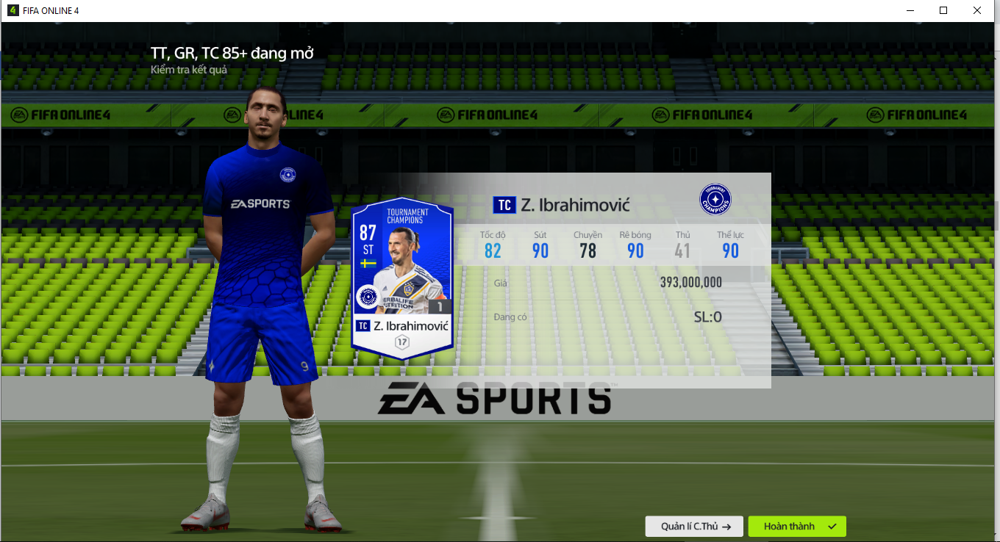

Thẻ b: là in đậm . Thẻ i: là in nghiêng. Thẻ u: là gạch dưới. Thẻ sup: là ví dụ như 32 hay PhúcNguyễn. Thẻ sub: là ví dụ như 96 hay PhúcNguyễn. Thẻ strong: là mang tính chất nhấn mạnh và in đậm từ ngữ có tầm quan trọng về ngữ nghĩa. Thẻ em: là mang tính chất nhấn mạnh ngữ nghĩa nhưng không in đậm và ít sử dụng Thẻ pre: là văn bản mà bên trong:Thẻ p: là để xác định đoạn văn bản (không chứa được thẻ khác ngoại trừ thẻ span) và nó tự format văn bản ví dụ:Được hiển thị bằng phông chữ có chiều rộng cố định và nó giữ nguyên cả dấu cách và dấu ngắt dòng.Thẻ a: là đường dẫn tạo liên kết đến một Website mình muốn dẫn đến. Ví dụ: Đường dẫn đến Facebook của Phúc Bình Dương. Thẻ img: là thẻ mình có thể add đường dẫn tuyệt đối hoặc tương đối mà mình muốn đưa vào. 
Thẻ h1: Thường dùng cho chủ đề và nó có cỡ chữ bự nhất ví dụ như:Web Programming.
Thẻ h2: Thường dùng cho chủ đề và nó có cỡ chữ nhỏ hơn h1 ví dụ như:Auto chess.
Thẻ h3: Thường dùng cho chủ đề và nó có cỡ chữ nhỏ hơn h2 ví dụ như:English.
Thẻ h4: Thường dùng cho chủ đề và nó có cỡ chữ nhỏ hơn h3 ví dụ như:EIU.
Thẻ h5: Thường dùng cho chủ đề và nó có cỡ chữ nhỏ hơn h4 ví dụ như:Google.
Thẻ h6: Thường dùng cho chủ đề và nó có cỡ chữ nhỏ hơn h5 ví dụ như:Facebook.
SƠN TÙNG M-TP | HÃY TRAO CHO ANH ft. Snoop Dogg | Official MV.
SƠN TÙNG M-TP | HÃY TRAO CHO ANH ft. Snoop Dogg | Official MV.
Thẻ div: dùng để định nghĩa một khu vực trong tài liệu (cấp độ theo khối).This one is only a test.